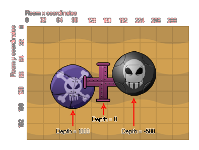

到目前为止你可以添加漂亮的图像和优美的声音资源，但是它们还没有在游戏内做任何事！为此我们需要 GameMaker: Studio 中最重要的资源: objects (物体)。物体是一个用来控制游戏各方面的具体事件的特殊资源。大多数时候它们拥有一个精灵使得你可以在房间中看到它们。但有时它们也作为 "幕后" 操控者，控制玩家相关信息、分数或时间等等... 你可以赋予它们行动，它们也可以对一些事件做出反应，就像你看到的大多数游戏中它们之间的相互作用。物体的 实例 和物体是两码事，实例是物体的拷贝 (喜欢的话也可以称为克隆)。这很重要，因为这意味着物体和实例 不 同，每一个实例均有自己的一套功能。
GameMaker: Studio 制作的游戏中，角色、怪物、墙等都是一个个放置在房间中的物体的实例。所以当我们讨论改变实例，只是讨论这一个拷贝而其余的实例并不受影响。但是当我们讨论改变物体的时候，那么房间里的所有相关实例均会受到影响。所以， 物体可以说是实例的模板，而实例就是我们制作游戏时放在房间里的具体实例。
选择 Resources 菜单的 Create Object 按钮 (或点击工具栏上相应的按钮) 就可以打开下列窗口:
一开始看到这个界面可能会迷茫，我们会讲解一下这个界面的概述。首先是左侧，是一些关于这个物体的信息，然后中间的列表是 events (事件)，右边是动作，最右边的是可以拖拽的预定义动作，这些预定义动作被归类在不同的选项卡中。事件和动作的详细信息在手册接下来的部分会提到。如果你使用 "Uses Physics" 选项卡，就会看到物理相关的选项，但是更多的会在后面讲到！
正如你期望的，你可以 (并且必须) 给你的物体命名。可以的话加上 obj 前缀或后缀加以区别会有好处。接下来你可以为你的物体选择一个精灵。单机左边的精灵框或其右边的按钮，就可以选择精灵了。如果没有合适的精灵，可以点击 New 按钮来新建精灵资源并且按照你的意愿编辑它，就像手动创建精灵一样，只不过按下 "OK" 按钮就会自动把这个精灵分配给物体。一旦你已经选择了一个精灵就可以按下 Edit 按钮来编辑它，这样就可以更快地编辑该资源。This can be faster than first finding the resource in the list of resources and then indicating you want to edit it.
下面是更多选项的介绍:
可见指的是房间开始时该物体的实例是否可见。通常选择可见，但是有时不可见也是有用的。例如，可以使用点方式控制怪物移动，或者跟踪并进行一定的动作。不可见的物体仍然会对事件作出反应，如果他们有精灵或者遮罩也会发生碰撞事件，他们只不过是不可见并且不会执行绘制事件。
GameMaker: Studio 里对固体物体的碰撞处理不同于非固体，所以，尽量只把墙这种不能动的物体设置为 固体。
你可以为物体的实例设置 深度，用来控制实例是位于其他实例之上还是之下，深度越高越先绘制。如下图:  要注意相同的深度 不 能保证谁先绘制。If you want to guarantee that an object lies on top of the others then you must give it a negative (or low) depth. 如果你想保证物体位于顶端请给它最小值。相反，如果想让它位于底部给它最大值即可。深度是一个变量，可以通过动作或者代码在游戏中改变它。
深度的上面是持续性设置。一个持续性的物体不会随着房间的改变而被摧毁，而是仍然呆在相同的位置，除非你明确地让它摧毁。这意味着它会在下一个房间里继续执行动作，这是很方便的。然而这需要你保持一个清晰的思路，如果没有正确地创建或摧毁它，就很有可能影响整个工程。
需要注意的是持续性物体也有它自己的 Game Start、Game End、Room Start 和 Room End 事件触发器，但是当重启游戏 (例如使用 game_restart() 函数)，所有现存的物体将会被移除并且再次被创建一次。还需要注意的是如果你 deactivate (停用) 一个持续性物体，它将不会从一个房间到另一个房间，直到被重新激活。
物体属性选项里最强大的功能就是父对了。游戏里每个物体都有一个父对，但是那是什么意思？好吧，当一个物体有一个父对，它就可以共享它的父对的代、动作和事件。这就是所谓的 "继承"，有父对的物体被称为 "child (子对)"。但这并不是全部！你也可以在检测和执行父对代码的同时自动包含子对去节省大量的时间和精力。从另一个角度来看父对就是 "group (组)"，分享某些事情而又不失去自己的身份。更多有关父对的信息 (和其他高级物体属性) 请查阅 更多关于物体。
请注意你可以点击 Parent 按钮自动打开指定父对物体，也可以看到它的子对列表。双击列表中的物体名称会打开属性窗口以便编辑。
当物体有一个精灵，它也有一个遮罩。这通常定义于精灵本身 (可以在精灵编辑器修改)，但有时你可能想要让物体拥有和精灵不同形状的遮罩，甚至 没有 精灵但却有一个遮罩。This is usually defined by the sprite itself (and can be changed in the sprite editor) but sometimes you may want an object to have a different shaped mask to its sprite, or even have no sprite but still a mask. 为什么呢？遮罩是 GameMaker: Studio 中支配碰撞事件的主角。当两个实例重叠，GameMaker: Studio 就决定是否发生碰撞，这依赖于遮罩 (可以是精灵的遮罩或是物体本身的遮罩)。如果没有遮罩就没有碰撞！如果你同时为物体制定了精灵和遮罩，GameMaker: Studio 在检测碰撞事件的时候总是检测遮罩而不是精灵。例如，如果你要制作一个等轴测游戏，物体通常有一个高度 (给他们一个 3D 视角)，但是你只想使用精灵的 "脚" 部分来进行碰撞。这可以通过创建一个单独的精灵并且指定为物体的碰撞遮罩。请注意你可以点击 Mask 按钮自动打开指定的遮罩。
Show Information 按钮是物体的概述，可以打印或另存为 HTML 文档。当你想要对你的物体有个大体了解这将非常有用。
当你选中这个复选框的时候，就是告诉 GameMaker: Studio 这个物体应该作为物理世界的一部分。这将会打开物体窗口的另一部分，在这里你可以定义物体的物理属性。更多信息请查看 更多关于物体。
| Converted from CHM to HTML with chm2web Pro 2.85 (unicode) |